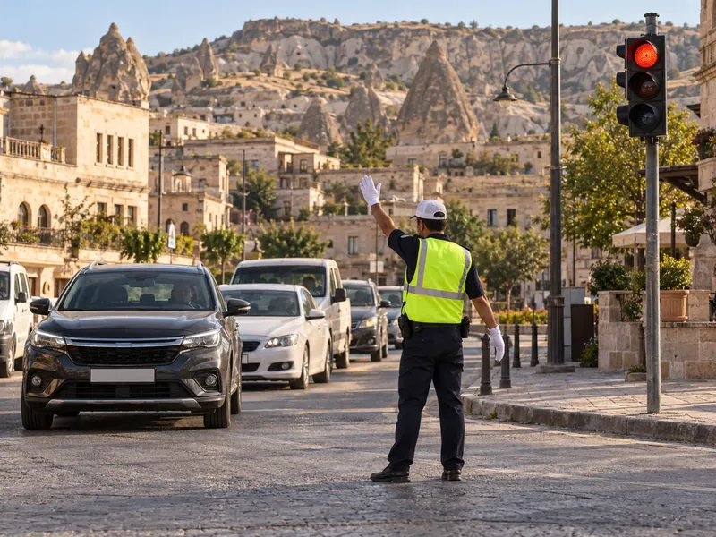

Trafik ışıklarına göre sür
Ürgüp sokaklarında direksiyon sende. Kavşaklara yaklaşırken ışığı izle: Fren’e basılı tutarak yavaşla ve çizginin önünde dur, yeşil yanınca Kalk. Yaya geçidindeki yayaları unutma. Hedef: 5 doğru karar.
Trafik ve ÇevreKonu 5 / 1749 çıkmış soruUygulamalı
Işıklı trafik işaret cihazındaki ışıkların anlamlarını, yanıp sönen ve oklu ışıkları, trafik görevlisinin gündüz ve gece verdiği işaretleri ve trafik işaretleri arasındaki öncelik sırasını kapsar.

Bir kavşakta birden fazla düzenleyici bulunduğunda sürücü şu sırayla uyar:
Yani görevli bulunan bir kavşakta ışık hangi renkte yanarsa yansın görevlinin işaretine uyulur; görevli yoksa ışıklara, ışık da yoksa levha ve çizgilere uyulur.
Işıklı işaret cihazında ışıklar yukarıdan aşağıya kırmızı, sarı ve yeşil olarak dizilir. Aksine bir durum yoksa her ışığın anlamı şöyledir:
| Yanan ışık | Anlamı | Sürücü ne yapar? |
|---|---|---|
| Kırmızı | Yol trafiğe kapalıdır. | Gelen araç olmasa bile durma çizgisinden önce durur, yeşili bekler. |
| Kırmızı ile birlikte sarı | Yol trafiğe açılmak üzeredir. | Harekete hazırlanır; yeşil yanmadan hareket etmez. |
| Yeşil | Yol trafiğe açıktır. | Durmadan, kavşaktaki yaya ve araçlara dikkat ederek geçer. |
| Yeşilden sonra sarı | Yol trafiğe kapanmak üzeredir. | Güvenle durabiliyorsa durur, kavşağa girmez. |
| Aralıklı (fasılalı) yanıp sönen sarı | İkaz: dikkat edilmesi gereken bir yere yaklaşılmaktadır. | Durmak zorunda değildir; yavaşlar, dikkatle geçer, gerekirse geçiş hakkı olanlara yol verir. |
| Aralıklı yanıp sönen kırmızı | DUR levhası anlamındadır. | Tam durur, yolu kontrol eder, trafik uygunsa geçer. |
Yanıp sönen ışıkları levha karşılıklarıyla birlikte öğrenmek kolaylık sağlar: yanıp sönen kırmızı = DUR levhası, yanıp sönen sarı = yol ver levhası. Bu tür ışıklar genellikle trafiğin az olduğu saatlerde veya tek başına tehlikeli bir noktayı işaretlemek için kullanılır.
| Görevlinin hareketi | Anlamı |
|---|---|
| Kollar iki yana açık (veya bir kol yana uzatılmış) | Görevlinin önünden ve arkasından gelen trafiğe yol kapalıdır, bu araçlar durur. Kolların gösterdiği yönlerden, yani görevlinin sağından ve solundan gelen trafiğe yol açıktır. |
| Bir kol dik olarak yukarı kaldırılmış | Dikkat: sarı ışık gibi, açık olan yolun kapanacağını, kapalı olanın açılacağını bildirir; trafik bütün yönlere kapanmaktadır. Kavşağa girmiş olanlar kavşağı boşaltır, diğerleri durur. |
| Kol yana uzatılmış, avuç içi yere dönük, aşağı yukarı hareket ettiriliyor | Yavaşla (trafiği yavaşlatma). |
| Dirsekten bükülü kolun eli baş hizasında seri biçimde sallanıyor | Trafiği hızlandırma. |
| Bir kol yukarıda, diğer elle yol kenarı gösteriliyor | İşaret verilen sürücü sağa yanaşıp durur. |
Geceleyin görevli aynı anlamları elindeki ışıklı işaret çubuğu ile verir. Sınavda bu işaretler şekil üzerinde sorulur; hareketin biçimine dikkat edin:
Gece işaretlerinde ayırt edici nokta, dur işaretinde çubuğun dik tutulması, geç işaretinde kolun yatay uzanması, dönüş işaretinde ise yayın aşağıdan çizilmesidir.
Okuduğunuz kuralı ekranda uygulayın. Hedefi tamamlayınca uygulama biter; hatasız bitirirseniz 3 yıldız alırsınız.
Ürgüp sokaklarında direksiyon sende. Kavşaklara yaklaşırken ışığı izle: Fren’e basılı tutarak yavaşla ve çizginin önünde dur, yeşil yanınca Kalk. Yaya geçidindeki yayaları unutma. Hedef: 5 doğru karar.
MEB sınavlarında bu konudan çıkmış 49 soru (13 tanesi en az üç sınavda soruldu). Her soruda doğru cevabı ve açıklamasını hemen görürsünüz.
Hangi sorular?
Sıralama